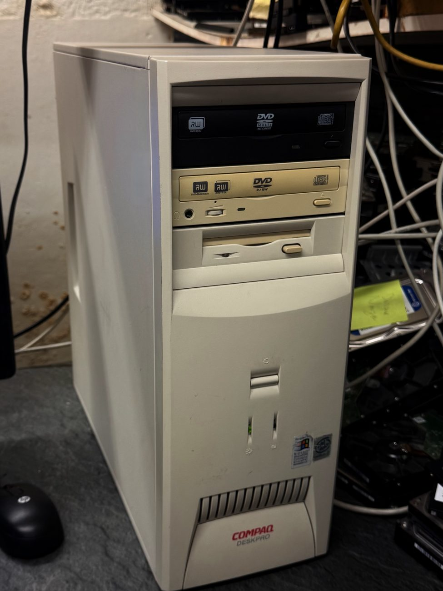
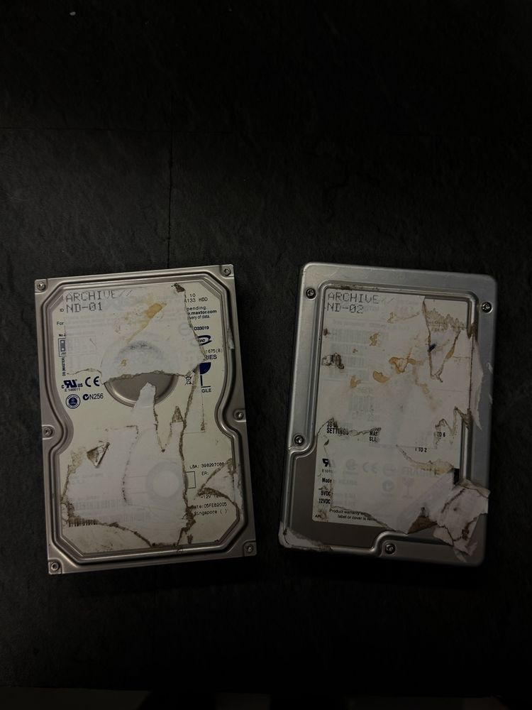
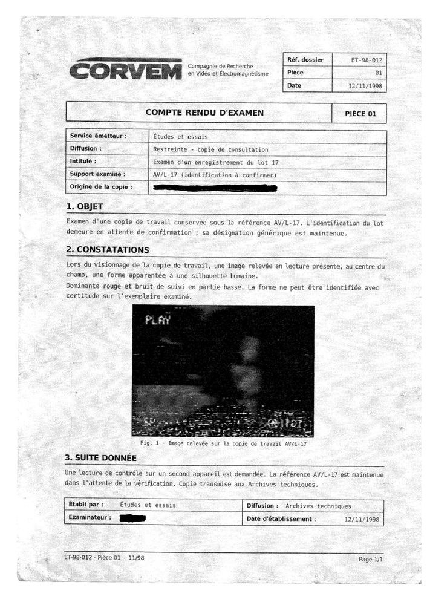

ENQUÊTE INDÉPENDANTE / SUPPORTS RETROUVÉS
Qui estNathanDelcourt?
Un vieux PC retrouvé au travail, deux disques durs et 590 fichiers SELF TAPE. Je regroupe ici tout ce que j'ai déjà montré.

COMPAQ06.10.2026


NATHAN DELCOURTIMAGE / 02
DERNIÈRES DÉCOUVERTES
ND-01ND-02SELF TAPECORVEMAV/L-17JANUSDOC / DATA
COMPRENDRE L'AFFAIRE / LE DÉBUT
Un vieux PC, au fond du stock.
Début octobre, en faisant du tri au boulot, j'ai retrouvé au fond du stock un vieux PC Compaq. Je voulais juste voir s'il démarrait encore. Il démarre, sous Windows XP, et au premier abord rien de spécial.
Puis je suis tombé sur un dossier : SELF TAPE NATHAN DELCOURT. À l'intérieur, des centaines de fichiers vidéo numérotés, de SELF TAPE 0001 à 0590, dont les plus anciens sont datés de 1994. Aucun ne s'ouvre normalement.
Je ne sais pas qui est Nathan Delcourt. Depuis le 6 octobre, je publie chaque étape sur TikTok, et vous m'aidez à avancer.
Puis je suis tombé sur un dossier : SELF TAPE NATHAN DELCOURT. À l'intérieur, des centaines de fichiers vidéo numérotés, de SELF TAPE 0001 à 0590, dont les plus anciens sont datés de 1994. Aucun ne s'ouvre normalement.
Je ne sais pas qui est Nathan Delcourt. Depuis le 6 octobre, je publie chaque étape sur TikTok, et vous m'aidez à avancer.
06.10.2026 · PREMIÈRE PUBLICATIONSELF TAPE 0001 – 0590FICHIERS DATÉS DÈS 1994
PIÈCES CONSULTABLES / INDEX ACTUEL
Explorer les archives.
Toutes les pièces déjà montrées sur TikTok. Touchez une fiche pour l'ouvrir.
Aucune pièce ne correspond à cette recherche.
F:\SELF TAPE NATHAN DELCOURT\
SELF TAPE 0001 – 0590.
Une case par numéro de la série. Les cases claires sont documentées dans une publication ; les cases en pointillés sont les 42 numéros absents du dossier d'origine. Cliquez sur un numéro pour voir ce qui a été publié.
590NUMÉROS DANS LA SÉRIE5RÉFÉRENCES DOCUMENTÉES42ABSENTS DU DOSSIER D'ORIGINE
Documenté dans une publicationAbsent, fragment récupéréAbsent du dossier d'origineRien de montré pour l'instant
PUBLICATIONS / TIKTOK
Les publications, dans l’ordre.
Les 38 publications, de la première à la dernière, avec les pièces qu'elles montrent. Les échanges se font dans les commentaires.
REPÈRES / DATES DOCUMENTÉES
Remettre les faits dans l’ordre.
ENQUÊTE OUVERTE / COMMUNAUTÉ
Questions ouvertes.
J'ai regroupé ici les questions auxquelles je n'ai toujours pas de réponse, dans l'ordre où elles sont apparues. Si vous avez une piste, laissez-la sous la publication concernée. Je créditerai ici les contributions qui permettent de faire avancer l'enquête.
REPÈRES ET LEXIQUE
J.
NOTE DE JULIEN / À PROPOS DU SITE
Pourquoi ce site ?
Vous êtes nombreux à recouper les dates et les références, en français, en anglais et en espagnol, et c'est difficile à suivre d'une vidéo à l'autre. J'ai donc regroupé ici tout ce que j'ai déjà montré : photos des supports, documents et images récupérées. Chaque document est transcrit et traduit, et chaque pièce renvoie à la publication où elle est apparue.
Certaines images et vidéos ont été compressées pour faciliter leur consultation. Si une traduction est fausse, dites-le-moi en commentaire.
— JULIEN